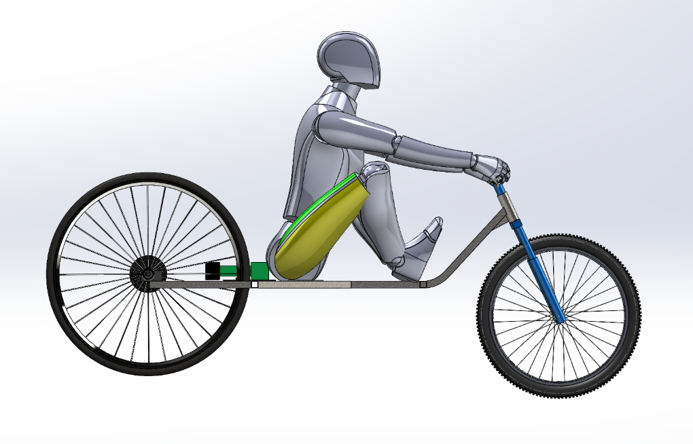
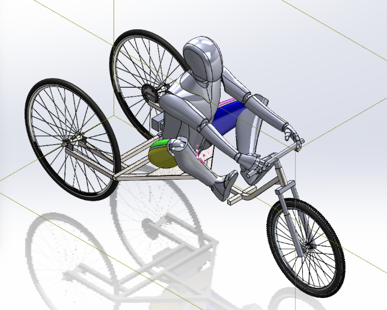
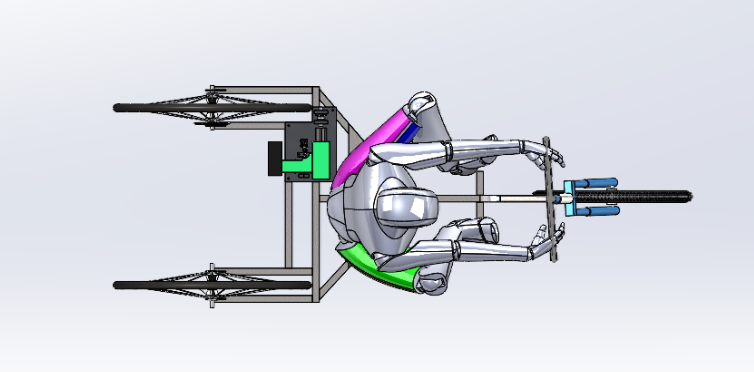

Side elevation
Isometric
Plan view01 / Component Design
Drill Powered Vehicle
Systems Engineer·6-person team·Jan – May 2025
🏆 4th place — endurance competition
A human-scale vehicle driven entirely by cordless drill batteries, designed and built from scratch over a semester. As systems engineer I owned the overall assembly — making sure the frame, drivetrain, and rider package actually fit together and survived the loads.
2.25 mi
in 30 minutes
< 50 lb
final weight
< $200
total budget
- Designed 10+ CAD components and assembled the final SolidWorks model.
- Ran FEA and hand calculations to confirm factor of safety and gear ratio.
- Sourced materials, managed the budget, and presented PDR and CDR reviews to shop professionals.
- Fabricated custom parts, welded the frame, and assembled the final vehicle.
- Co-authored the full technical report covering design, testing, and manufacturing.